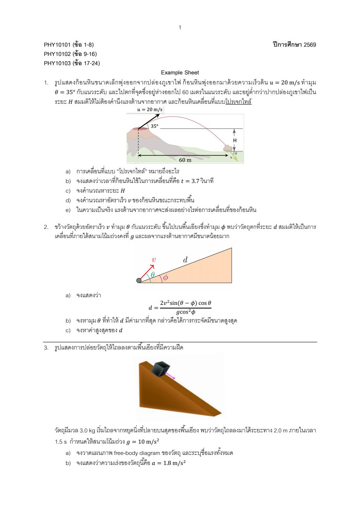

1 1. ก้อนหินพุ่งออกจากปล่องภูเขาไฟด้วยความเร็วต้น $u=20\ \text{m/s}$ ทำมุม $\theta=35^\circ$ กับแนวระดับ และไปตกที่จุดซึ่งอยู่ห่างออกไป $60$ เมตรในแนวระดับ และอยู่ต่ำกว่าปากปล่องภูเขาไฟเป็นระยะ $H$ สมมติให้ไม่ต้องคำนึงแรงต้านจากอากาศ และก้อนหินเคลื่อนที่แบบโปรเจกไทล์ (ใช้ $g=10\ \text{m/s}^2$)
a) การเคลื่อนที่แบบ “โปรเจกไทล์” หมายถึงอะไร
b) จงแสดงว่าเวลาที่ก้อนหินใช้ในการเคลื่อนที่คือ $t=3.7$ วินาที
c) จงคำนวณหาระยะ $H$
d) จงคำนวณหาอัตราเร็ว $v$ ของก้อนหินขณะกระทบพื้น
e) ในความเป็นจริง แรงต้านจากอากาศจะส่งผลอย่างไรต่อการเคลื่อนที่ของก้อนหิน
🖼 ดูรูปโจทย์ต้นฉบับ (ex/ex01.jpg)

ดูวิธีทำ
โปรเจกไทล์คือวัตถุที่ถูกปล่อยหรือพุ่งออกไปแล้วเคลื่อนที่ในอากาศโดยมีแรงโน้มถ่วงเพียงแรงเดียว (ไม่คิดแรงต้านอากาศ) ดังนั้น
• แนวระดับ: ไม่มีความเร่ง $a_x=0$ ความเร็ว $v_x$ คงที่
• แนวดิ่ง: ความเร่งคงที่ $a_y=-g$
• สองแนวเคลื่อนที่อิสระต่อกัน มีเวลา $t$ ร่วมกัน วิถีเป็นพาราโบลา
แยกความเร็วต้น $u_x=u\cos\theta=20\cos35^\circ=16.38\ \text{m/s}$ และ $u_y=u\sin\theta=20\sin35^\circ=11.47\ \text{m/s}$
แนวระดับความเร็วคงที่ จึงได้ $x=u_xt$
$$t=\frac{x}{u\cos\theta}=\frac{60}{20\cos35^\circ}=3.66\ \text{s}\approx3.7\ \text{s}$$ตั้งทิศขึ้นเป็นบวก การกระจัดแนวดิ่งที่เวลา $t$
$$y=u_yt-\tfrac12gt^2=(11.47)(3.66)-\tfrac12(10)(3.66)^2=42.0-67.1=-25.0\ \text{m}$$เครื่องหมายลบแปลว่าอยู่ต่ำกว่าจุดเริ่ม ดังนั้น $H=25\ \text{m}$
ความเร็วแนวดิ่งตอนกระทบ $v_y=u_y-gt=11.47-10(3.66)=-25.15\ \text{m/s}$ ส่วน $v_x=16.38\ \text{m/s}$
$$v=\sqrt{v_x^2+v_y^2}=\sqrt{16.38^2+25.15^2}\approx30\ \text{m/s}$$ตรวจด้วยพลังงาน: $v^2=u^2+2gH=400+2(10)(25)=900$ จึง $v=30\ \text{m/s}$ ตรงกัน (ทิศทางทำมุมประมาณ $57^\circ$ ต่ำกว่าแนวระดับ)
แรงต้านมีทิศตรงข้ามความเร็วและเปลี่ยนพลังงานกลเป็นความร้อน ผลคือ ก้อนหินมีระยะไกลสุดและความสูงสุดลดลง วิถีไม่สมมาตร (ช่วงตกชันกว่าช่วงขึ้น) ความเร็วแนวระดับไม่คงที่ แต่ลดลงเรื่อย ๆ และอัตราเร็วขณะกระทบพื้นน้อยกว่า $30\ \text{m/s}$